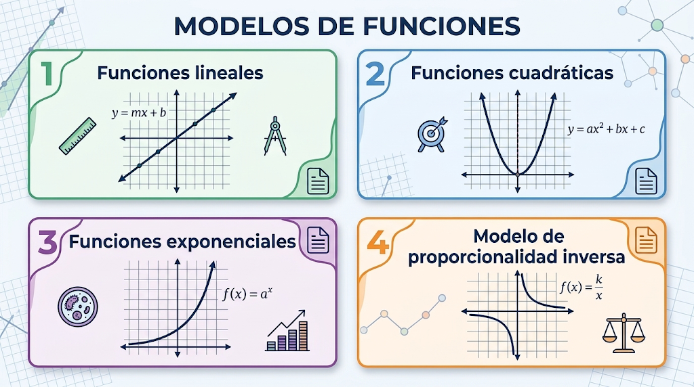

Skip to content
S6 - Matemáticas 3p
Tema 1 - Funciones, conceptos básicos
Funciones: definición y propiedades
Concepto de función
Dominio y recorrido
Signos y cortes con los ejes
Monotonía: crecimiento, decrecimiento, extremos
Transformación de funciones
Familias de funciones
Funciones lineales
Funciones cuadráticas
Funciones exponenciales
Modelo de proporcionalidad inversa
Tema 2 - La tasa de cambio: derivada
Tema 3 - Combinatoria y probabilidad
Tema 4 - Modelo Periódico
Tema 5 - Distribuciones discretas. Bernoulli
Créditos
S6 - Matemáticas 3p
Familias de funciones
Toggle content

Anterior
Siguiente
Creado con eXeLearning
(Ventana nueva)